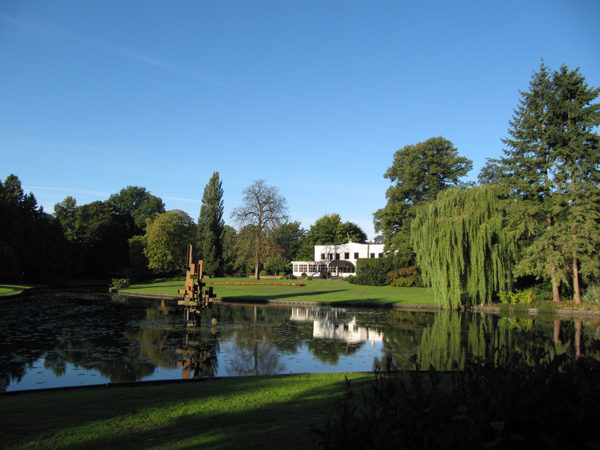
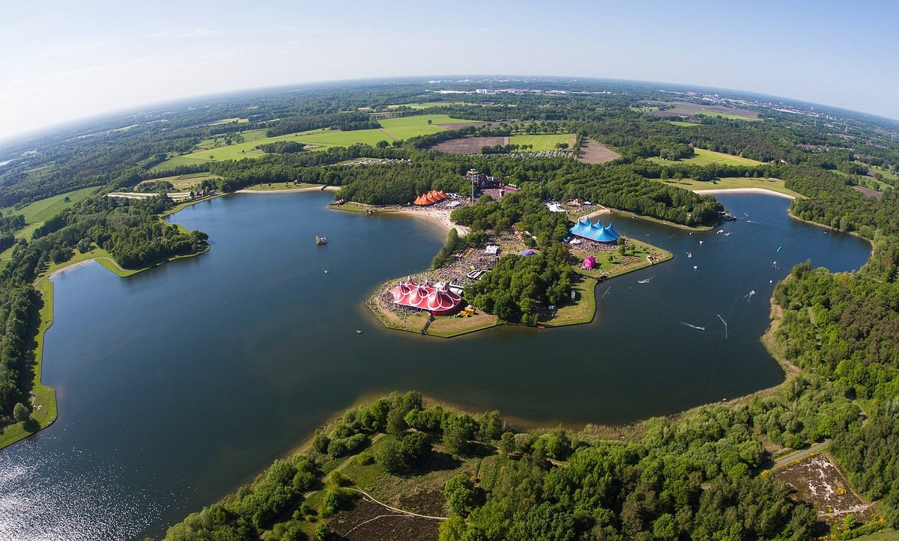

- Door de grote stadsbrand in 1862 ging een groot deel van Enschede in vlammen op.
De meeste huizen in onze stad zjin daarom nog niet zo heel oud. Gelukkig is het Elderinkshuis
aan de Klomp 35 bespaard gebleven. Het huis uit 1783 is daarmee het oudste huis van Enschede.
- Huh, grachten in Enschede? Jazeker! In 1325 kreeg Enschede stadsrechten en mocht daarom een gracht aanleggen.
De eerste gracht werd als snel gebouwd en rond 1450 kreeg Enschede een tweede gracht. Het verdwijnen van de
grachten heeft wederom met de stadsbrand in 1862 te maken. De stad moest opnieuw worden opgebouwd en de
poorten en gracht met briggen verdwenen hierbij.
- Als je tegenwoordig vanaf je mobiel naar een vast nummer in Enschede belt, begin je het nummer met 053: het
netnummer van Enschede. Maar dit is niet altijd zo geweest. Er was een tijd dat je 05420 moest draaien - draaien
ja - wanneer je vanuit een andere plaatst naar een lijn in Enschede belde.
- Op 5 mei vieren we welk jar onze vrijheid. Maar wist je dat Enschede op 1 april al werd bevrijd van de
Duitse bezetting?
- Met 101 meter is de Alphatoren niet alleen het hoogste gebrouw van Enschede, maar van heel Overijssel! De toren
aan de Boulevard 1945 telt 28 verdiepingen en 450 treden. De Ijsseltoren in Zwolle is met 96 meter het een-na-hoogste
gebouw in Overijssel.
Volkspark Enschede

Het Volkspark te Enschede is een plek waar je het leven in de stad even kan ontvluchten.
Met een grootte van maar liefst 15 hectare is het een centraal punt in de stad en heeft
het park voor alle inwoners van Enschede wat te bieden. Het Volkspark Enschede is dan ook
al sinds jaar en dag de perfecte locatie voor het organiseren van diverse evenementen en
activiteiten. Zo worden er onder andere popfestivals, kunstevenementen en kermissen georganiseerd.
Het Rutbeek

Het Rutbeek staat in de Dagrecreatie Top-5 van Overijssel en is één grote uitdaging voor outdoorliefhebbers!
Voor alle leeftijden is er wat te doen: heerlijk zwemmen in het meer, chillen op de stranden en een drankje
doen op het terras. Als je van meer actie houdt, kun je je energie kwijt op de skipiste, de tubingbaan,
in het klimbos, de waterskibaan, het adventureterrein of op de survivalbaan!